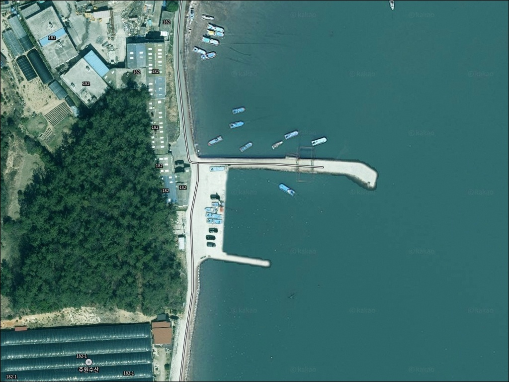
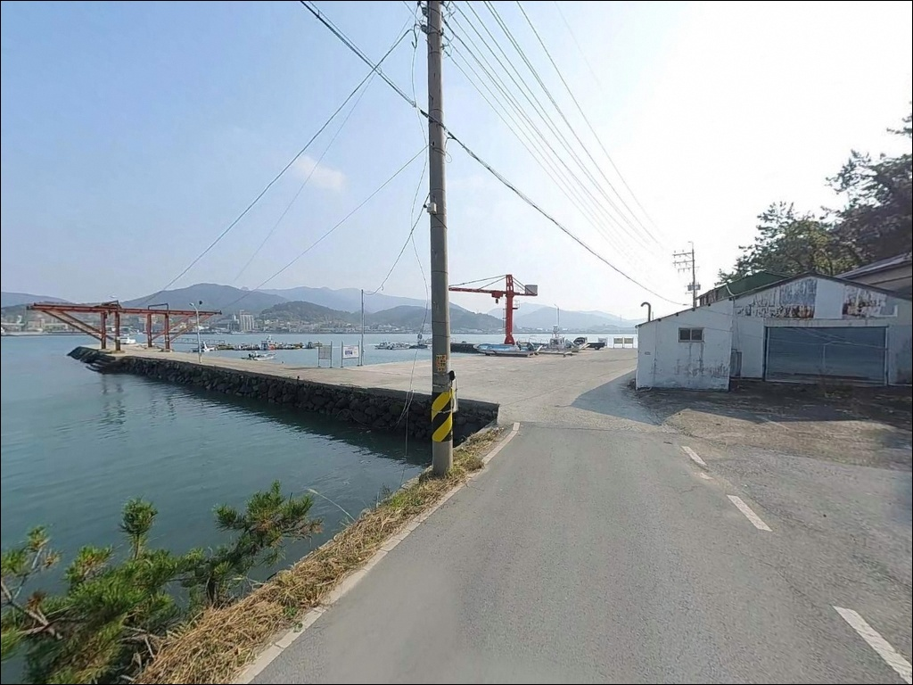
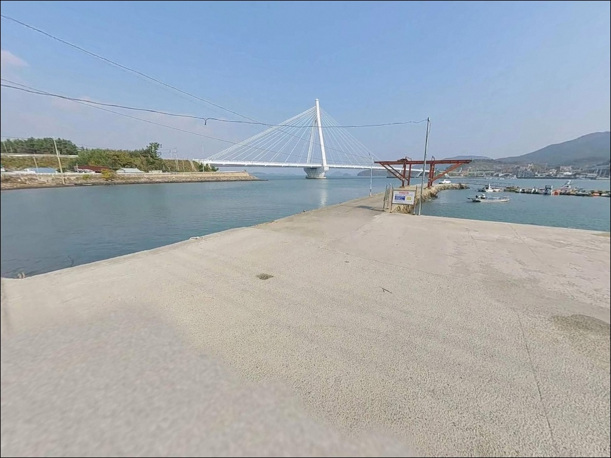
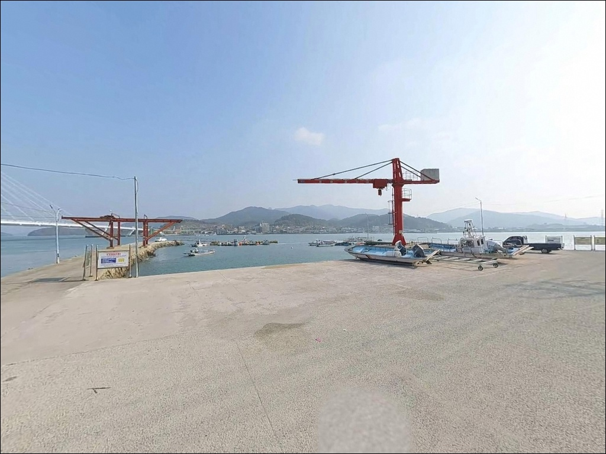
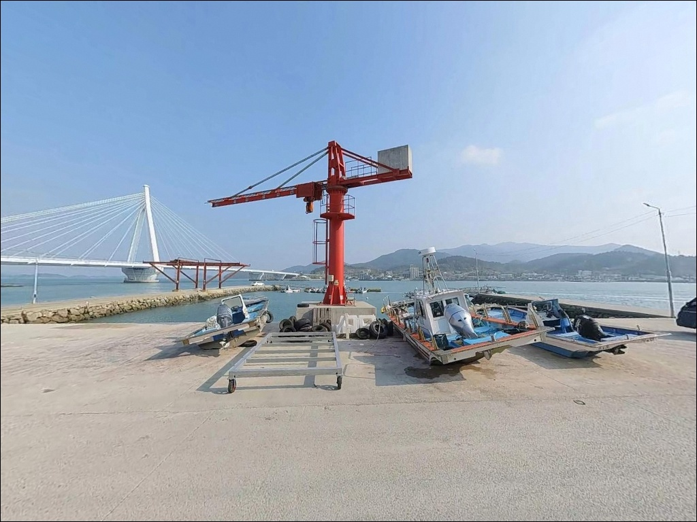
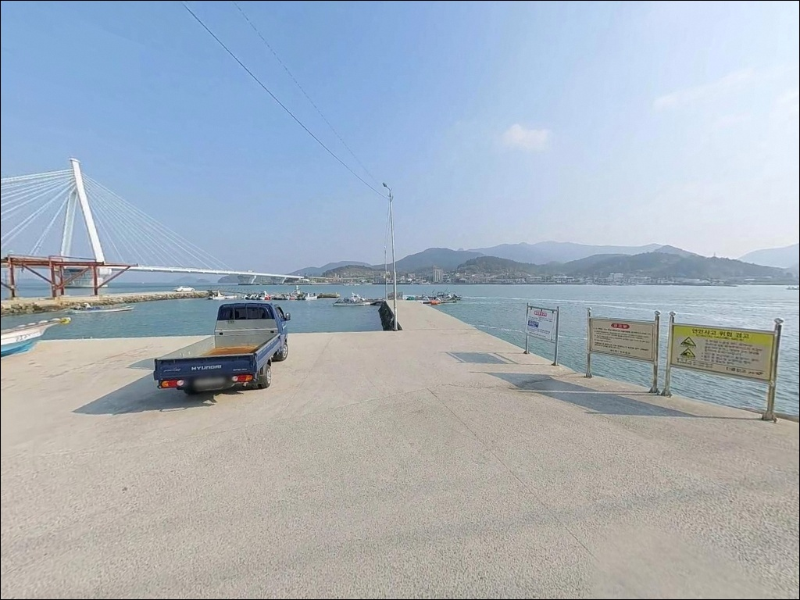
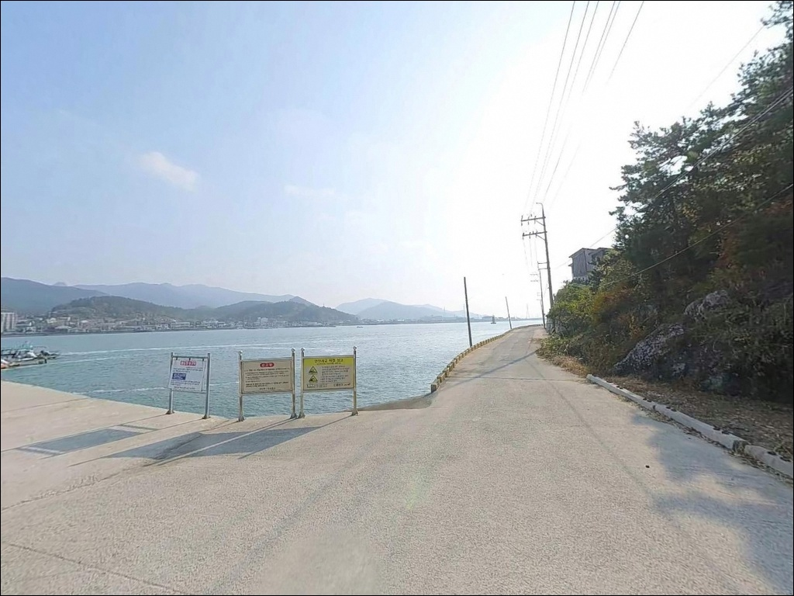
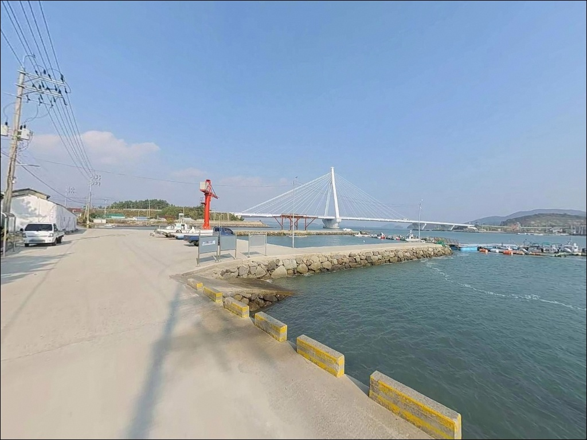
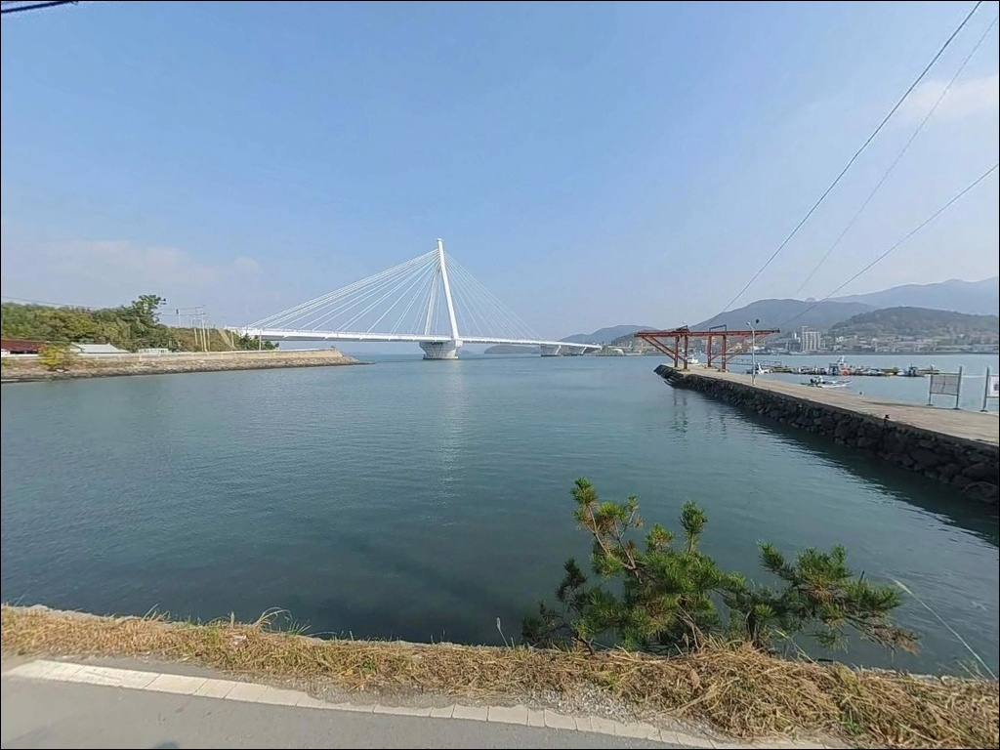

원동리 선착장, 전남 완도군 캠낚족들의 성지로 소문난 바다 차박 낚시 명당


포인트 안내
원동리 선착장
전남 완도군 군외면 원동리 345-12
완도대교 아래 수로를 끼고 있는 원동리 선착장에서
가장 자주 생기는 판단 실수는
물때 확인 없이 출발하는 것입니다.
수로형 지형 특성상 사리 전후에는 조류가 강해져
어떤 채비를 써도 바닥 탐색 자체가
어려운 상태가 됩니다.
이 글은 원동리 선착장의 진입 동선,
차박 여건, 낚시 방식별 공략 조건을
정리합니다.
조황 단정이나 특정 어종 보장은
이 글의 범위에 포함되지 않습니다.

1. 포인트 위치 및 진입 동선 분석
완도대교를 건너 완도 섬으로 진입한 뒤
군외면 원동리 방향 해안 도로를 따라가면
선착장에 닿습니다.
진입로는 포장이 되어 있어
차량 접근 자체에는 큰 무리가 없습니다.
마을 안쪽으로 이어지는 구간은
도로 폭이 좁은 편이라,
중형 SUV 이상 차량이라면
출발 전 위성지도로 마지막 진입 구간을
확인해두는 것이 좋습니다.
회차 공간도 넉넉하지 않아
초행길이라면 낮에 동선을 한번 확인하는 편이
안전합니다.
주차는 선착장 옆 공터를 활용하는 것이 일반적입니다.
소규모 마을 선착장 구조상
어선이 드나드는 동선과 겹칠 수 있어,
어선 작업을 방해하지 않는 자리를
먼저 파악하는 것이 기본입니다.
선착장 끝단 주차 시에는
전방 거리 확보를 반드시 확인해야 합니다.

2. 차박 환경 평가 및 야간 체류 여건
완도대교 인근의 마을형 선착장인 만큼
완전한 고립형 차박지와는 성격이 다릅니다.
민가와 가까워 야간에도 어느 정도 조명이 미치는
환경이지만, 교량 통행음이 간헐적으로
들릴 수 있는 위치입니다.
조용한 독립형 차박을 원하는 분보다는
낚시를 마치고 자리를 옮기기 귀찮을 때
간편하게 체류하는 용도에 맞는 형태입니다.
주차 공간이 넉넉하지 않아
차박 전용 자리를 잡기 어려울 수 있으므로,
선착장 현장 여건을 먼저 파악해두는 것이
현실적인 접근입니다.
어선 작업 시간대인 새벽~오전 사이에는
동선이 겹칠 수 있습니다.
야간 낚시 후 차 안에서 쉬는 정도로
활용하는 방식이 이 선착장 여건에 맞습니다.


3. 주변 편의시설 및 인프라 현황
반경 3km 이내에 이마트24와 CU가
각각 한 곳씩 있으며,
완도농협 하나로마트와 군외농협 주유소도
같은 거리 안에 확인됩니다.
먹거리와 연료는 진입 전
군외면 소재지에서 미리 해결할 수 있습니다.
반경 10km권으로 확대하면
완도읍 시내에서 편의점, 낚시점, 마트,
의료 시설을 모두 이용할 수 있습니다.
출조 전 채비를 보충하거나 얼음을 준비할 계획이라면
완도읍을 들렀다가 진입하는 동선이
가장 효율적입니다.

4. 진입 전 반드시 챙겨야 할 준비사항
물때 확인이 첫 번째입니다.
수로형 지형 특성상 밀물과 썰물이
교차하는 타이밍에 조류가 특히 강해지는
구간이 생깁니다.
바다타임에서 완도 군외면 기준 물때를 확인하고,
조금 전후나 정조 타이밍을 중심으로
입장 시각을 계획하는 것이 기본입니다.
선착장 앞 바닥은 펄 성분이 강한 편입니다.
원투낚시 채비는 넓은 면적의 봉돌을 쓰는 것이
바닥에서 버티는 힘을 높이는 방법입니다.
조류가 강한 시간대에는
무거운 봉돌을 준비해 가는 편이
현장에서 당황을 줄입니다.
야간 낚시를 계획한다면
헤드랜턴과 구명조끼는 기본이고
미끄럼 방지 신발도 함께 챙겨야 합니다.
수로형 지형은 바람 영향도 받는 편이라
기상청 해상 예보는 출발 당일 다시 확인하는
것이 좋습니다.

5. 조류 세기에 따라 낚시 여건이 달라지는 구조
원동리 선착장의 핵심 지형 특징은
완도와 육지 사이 수로 구조입니다.
좁아지는 수로 구간에서는 조류가 집중되는 경향이 있어,
물때가 맞을 때는 어종이 붙기 좋은 조건이 됩니다.
선착장 앞쪽 수심은 4m 내외로 추정되며,
바닥은 펄 성분이 강한 편입니다.
선착장 끝단이나 앞쪽은
내항보다 수심이 급변하는 구간이 있어
채비가 가라앉는 속도가 달라지는 것을
느낄 수 있습니다.
완도 군외면 일대는 감성돔, 농어, 볼락이
기대되는 해역이며,
조류 흐름이 살아 있는 타이밍에
집중하는 것이 이 포인트의 기본 전략입니다.
수로형 지형에서는 조류가 살아 있는 물때를 맞추는 것이
낚시 여건을 결정하는 핵심 조건입니다.
완도대교 교각 주변은 구조물 낚시를 시도해볼 수 있는
특수 지점이기도 합니다.
발판 상태와 수심 변화를 반드시 현장에서
확인한 뒤 자리를 잡아야 합니다.
출조 전에 원동리 선착장 일대 최신 조황은
직접 검색해보시기 바랍니다.


6. 원동리 선착장에 어울리는 낚시 스타일
찌낚시가 이 포인트 구조에 잘 맞습니다.
수로 조류를 타며 채비를 흘려 보내는 방식으로
감성돔과 농어를 노릴 수 있는 조건이 있습니다.
조류 방향이 일정하게 형성되는
정조 전후 1~2시간이
집중 공략 시간대입니다.
원투낚시는 수심 4m 내외의 펄 바닥을
탐색하는 방식으로 운용할 수 있습니다.
조류가 강한 시간대에는 봉돌을 무겁게 가져가야
채비가 제자리를 유지합니다.
바닥 어종 위주로 접근하는 방식이
이 포인트 여건에 어울립니다.
볼락 라이트게임은 야간 시간대에
완도대교 교각 주변 구조물을 중심으로
시도해볼 수 있습니다.
소형 지그헤드에 웜 채비로
구조물 가장자리를 천천히 탐색하는 방식이 기본이며,
빛이 닿는 경계 지점을 먼저 파악하는 것이
출발점입니다.

7. 대안 포인트 및 플랜 B 동선
원동리 선착장의 주차 공간이 여의치 않거나
조류가 너무 강해 낚시가 어려울 경우,
가장 가까운 대안은
망축선착장입니다.
원동리에서 약 2.5km 거리에 있으며
동일 해역 라인에서 비슷한 어종 패턴을
기대해볼 수 있는 곳입니다.
갈문리 방파제는 약 4km 거리로
완도 동부권에서 포인트로 알려진 곳입니다.
방파제 구조로 원투낚시와 찌낚시를 함께 운용하기 좋으며,
원동리 선착장보다
현장 정보 접근성이 높은 편이라
처음 이 권역을 탐색하는 분에게 먼저 확인하기
좋은 대안입니다.
불목리 선착장은 완도 동부 방향 대안입니다.
조류가 너무 강해 낚시 자체가 어려울 때
상대적으로 조류 영향이 적은 자리를 찾는다면
이쪽 동선을 검토해볼 수 있습니다.
신흥리선창도 인근에 있으며,
완도 군외면 동부 해안 선착장들을
묶어서 탐색하는 동선이 이 권역에서
효율적입니다.

물때와 진입로만 파악해두면
원동리 선착장은 부담 없는 포인트입니다
찌낚시나 원투낚시 위주의 생활 낚시를
즐기는 분이라면
원동리 선착장의 수로 구조는
나쁘지 않은 조건입니다.
완도대교에서 가깝고
3km 이내 편의시설도 갖춰져 있어,
완도 군외면 일대를 돌며 여러 포인트를
탐색하는 동선에 자연스럽게 포함시킬 수 있습니다.
단독으로 원정하기보다는
갈문리나 망축선착장과 묶어서
함께 돌아보는 방식이
이 권역에서 더 효율적인 출조입니다.
완도읍 군외면 일대 선착장을 처음 탐색하는
분이라면, 먼저 대안 포인트 위치를 함께
파악해두고 출발하는 것이
헛걸음 확률을 낮추는 준비입니다.
생활 낚시 위주의 조용한 선착장에서
하룻밤 차 안에서 쉬어가고 싶은 분이라면,
물때만 맞추고 어선 동선만 피해두면
낚시와 차박을 함께 엮을 수 있는
출조가 됩니다.